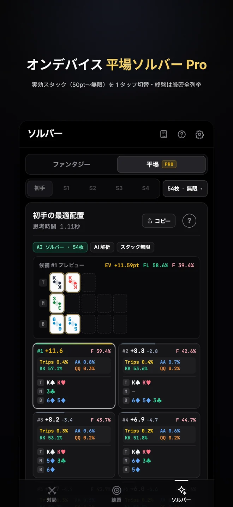

OFC Pineapple を、
勘から「期待値」へ。
初手 S0 から最終 S4 までの平場ソルバー、AI 1局レビュー、実効スタック（50pt〜∞）別の最適解、54枚／52枚（ジョーカーなし）完全対応。iPhone 内オフライン動作＋PC・Android 向け無料 Web 版も公開中。


あなたの OFC 直感、厳密計算に勝てるか？
実戦から厳選した 3 問をブラウザ上でそのまま解けます。すべて専用ソルバー＋最新 FL 価値テーブルで検証した期待値（EV）・FL 突入率・ファウル率を即時採点。
強くなるために必要な道具を、iPhone 1 台に。
タップで画像を拡大できます。全機能がオフラインで動作するため、海外遠征や機内、オフライン卓でもそのまま解析可能。
スタック深さとジョーカー有無で、FL 価値は別物になる。
「スタック無限・54枚」の感覚のまま 50pt 卓や 52 枚（ジョーカーなし）卓を打つと、Trips 特攻で大きく期待値を落とします。アプリ内では 1 タップで卓条件を切替可能。


まずは無料で体験。本格研究には Pro。
毎日の「今日の 1 問」・AI 1局レビュー・平場ソルバー・CPU 対戦はすべて無料で試せます。本格研究向けの Pro プランはサブスクと買い切りプランを用意。
※ 表示価格は日本（JPY）／米国（USD）の基準目安です。実際の請求額は App Store の各地域通貨・為替レートに準じます。サブスクリプションは iOS の「設定」からいつでも解約できます。買い切りプランは自動更新されません。
よくある質問
無料 OFC 攻略ガイド＆点数表ライブラリ
リアル卓で即使えるロイヤリティ早見表・点数計算実例から、ソルバー実測データに基づく初手 5 枚セオリー・FL 14〜17 枚戦略・2026年ツール比較まで全 7 本を無料公開中。
📖 ルール＆ロイヤリティ完全点数表 →
トップ 66〜AAA・ミドル・ボトムの全点数表、ファウル清算、インタラクティブ即計算ツール付き。
🧮 点数計算＆ファウル清算の実戦例 4 選 →
2勝1敗で -19pt 負ける逆転例やスクープ +18pt・片方ファウル -33pt を具体的な計算式で解説。
🎯 初手 5 枚戦略＆ファウル回避ガイド →
厳選初手 66 局面で判明した「スタック逆転率 71.2%」「最適ファウル率 30.0%」とワンクリック解析例題。
⭐ ファンタジー 14〜17 枚の置き方コツ →
継続 vs ロイヤリティの損益分岐点・4 ステップ配置手順と、そのまま解ける 14〜15 枚ソルバー例題。
📈 ファンタジーランド期待値表（50pt〜∞）→
相手の反撃 FL と実効スタック上限まで織り込んだ 1 対 1 実戦の QQ〜Trips 期待値表＆スタック別 EV 変化解説。
🃏 ジョーカー 54 枚 vs 52 枚比較ガイド →
自動降格・重複ルール細則と、52 枚卓で Trips FL が -43% 低下＆ QQ が逆転する理由と戦略修正 4 点。